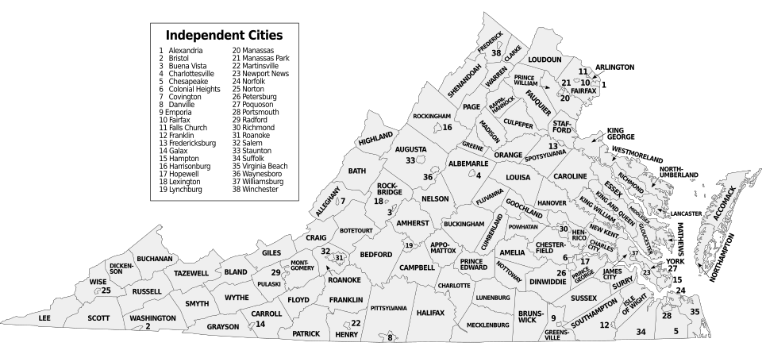

Holding Power Accountable Through Data
VA Watchdogs compiles and presents recent crime data from counties and cities across Virginia. The mission is to promote transparency in policing efforts and empower communities with the information they need to drive meaningful change.

County & City Crime Data
Crime statistics vary dramatically across Virginia's counties and independent cities. VA Watchdogs currently tracks data from seven key jurisdictions: Alexandria, Arlington, Fairfax County, Richmond, Norfolk, Roanoke, and Falls Church. Each faces unique public safety challenges shaped by population density, economic factors, and policing strategies.
The data below is sourced from the FBI Crime Data Explorer and reflects the 2024 reporting year (the most recent available). All rates are per 100,000 residents. By making this data accessible and easy to compare, residents can identify trends, understand where resources are being allocated, and hold local officials accountable.
Featured Jurisdictions
- Violent Crime 10,007
- Property Crime 14,716
- Homicides 2
- Agg. Assault 1,022
- Robbery 490
- Burglary 733
- Larceny/Theft 12,205
- Violent Crime Up 9%
- Property Crime Up 12%
- Agg. Assault 400
- Simple Assault 1,583
- Shoplifting 1,863
- Drug Offenses Up 1%
- Group A Offenses Up 11%
- Violent Crime 46,695
- Property Crime 77,876
- Homicides 106
- Agg. Assault 2,890
- Robbery 1,998
- Burglary 3,270
- Larceny/Theft 67,959
- Violent Crime 17,602
- Property Crime 38,050
- Homicides 332
- Agg. Assault 2,561
- Robbery 1,373
- Burglary 3,912
- Larceny/Theft 29,917
- Violent Crime 1,082
- Property Crime 8,694
- Homicides 37
- Agg. Assault High
- Robbery High
- Burglary High
- Vehicle Theft High
- Violent Crime 17,198
- Property Crime 20,111
- Rape 367
- Agg. Assault 1,591
- Robbery 443
- Burglary 2,372
- Larceny/Theft 15,904
- Violent Crime 15
- Property Crime 225
- Homicides 0
- Assault Low
- Robbery Low
- Burglary Low
- Larceny/Theft Majority
Policing Efforts & Accountability
Understanding how law enforcement agencies operate is essential to building trust between police departments and the communities they serve. VA Watchdogs tracks key policing metrics including response times, officer-to-resident ratios, use-of-force incidents, and complaint resolution rates across Virginia jurisdictions.
Transparency in policing helps build a shared foundation of facts that enables constructive dialogue and evidence-based policy decisions. When residents and officials can look at the same data together, the conversation moves forward.
Educational Resources
Data without context can mislead. VA Watchdogs provides educational guides that explain how crime data is collected, what the numbers mean, and how citizens can use this information responsibly. The resources cover topics such as the Uniform Crime Reporting (UCR) program, the National Incident-Based Reporting System (NIBRS), and how to read a department's annual report.
Whether you are a student, journalist, community organizer, or concerned resident, these resources will help you navigate the data with confidence.
About VA Watchdogs
VA Watchdogs was founded on a simple belief: communities that have access to clear, accurate public safety data are better equipped to advocate for themselves. VA Watchdogs is a non-partisan project dedicated to compiling Virginia crime data into an accessible, user-friendly format. The site also has a strong interest in supporting local law enforcement and encouraging civic engagement. When residents stay informed and involved, they strengthen the relationship between their communities and the officers who serve them.
All data is sourced from the Virginia State Police, the FBI's Crime Data Explorer, and individual department reports. VA Watchdogs presents the facts and lets the community decide what action to take.